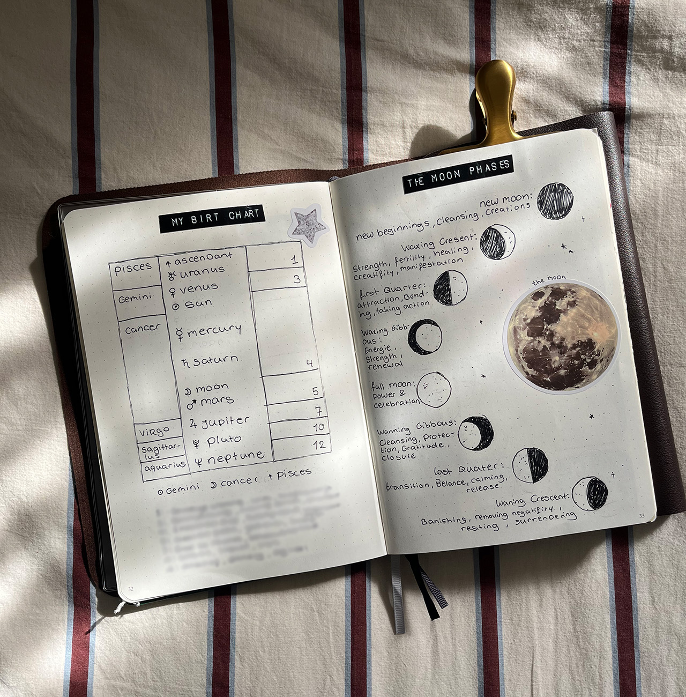
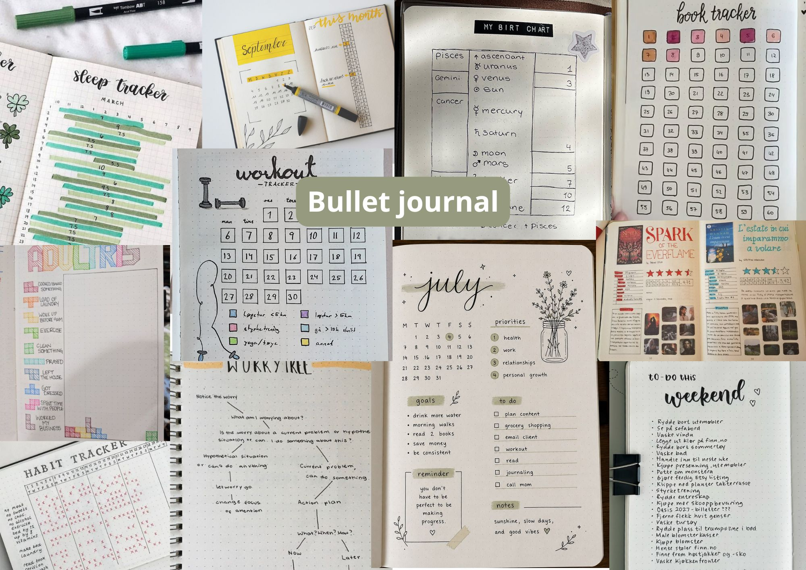
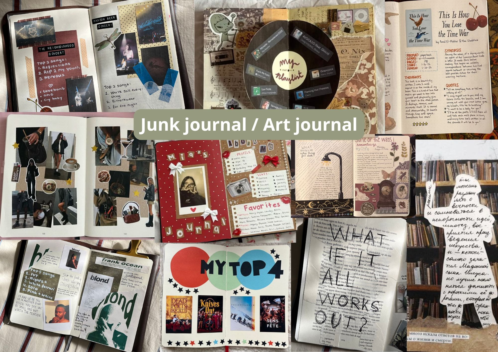
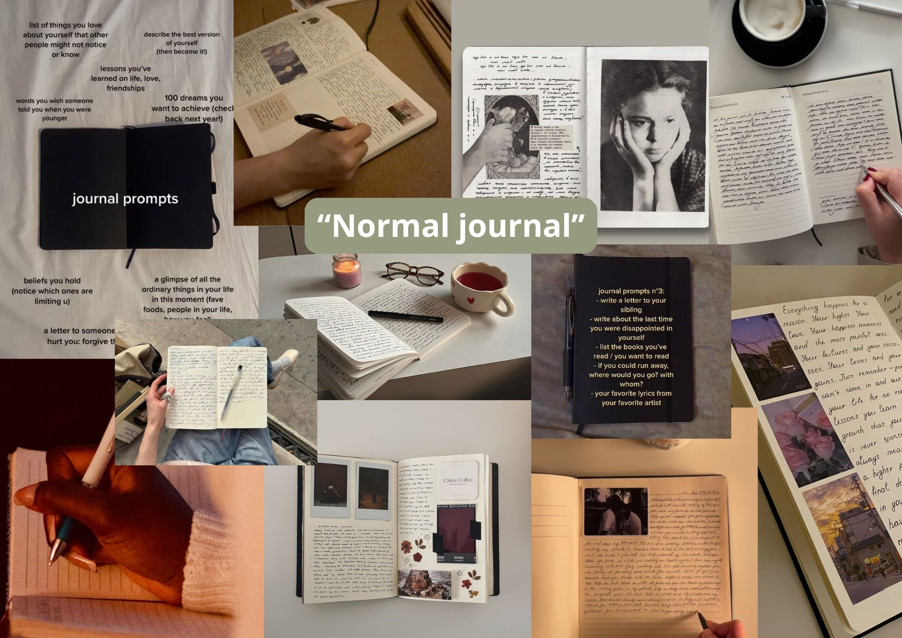
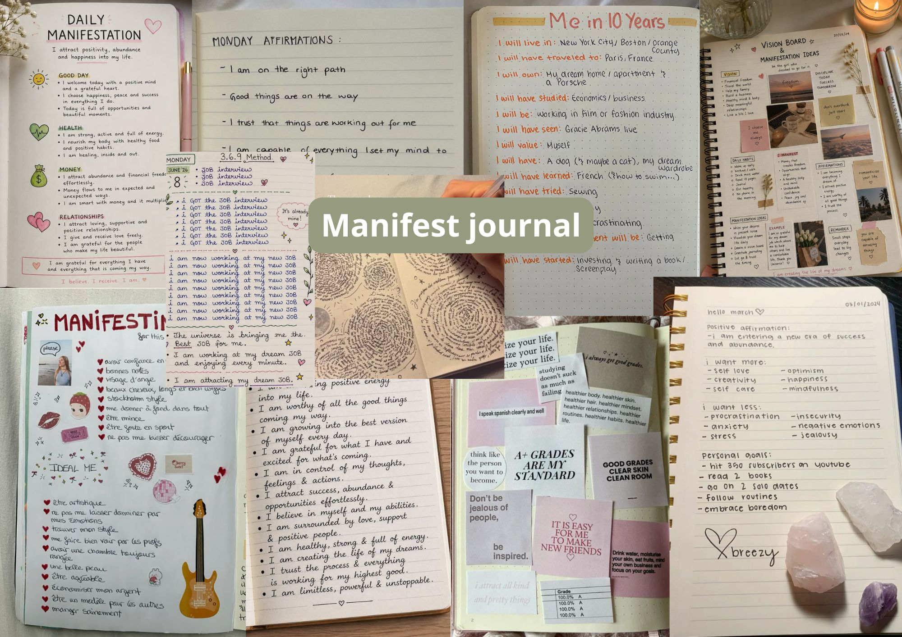

class: center, middle <!-- In deze textarea kan je in Markdown de slides aanpassen, zie https://github.com/gnab/remark/wiki voor alle mogelijkheden! --> # Inspiratie voor de digital garden van Plamedie --- # Agenda 1. Onderwerp - Journalen 2. 10 links 3. Bullet journal 4. Junk journal/Art journal 5. "Normal" Journal 6. Manifest journal 7. introtekst --- # Onderwerp - Journalen Ik wil een creatieve scrapbookachtige website maken waar bezoekers verschillende journalstijlen kunnen ontdekken, inspiratie opdoen en hun eigen stijl kunnen personaliseren. - Ik journal ook in mijn vrije tijd om mijn creativiteit te uiten - Journalen is heel breed - hobby <p></p> --- # 10 links https://www.deargoodmorning.com/wat-is-journallen-met-tips/ https://www.cm.be/jongeren/mind/journaling https://psycholoog.nl/blogs/wat-zijn-de-psychologische-voordelen-van-journaling/ https://krijtgeluk.nl/7-redenen-om-vandaag-nog-te-beginnen-met-journallen/ https://www.nipponkawaii.nl/blogs/nieuws/wat-is-journaling-voor-beginners https://tijdwinst.com/journaling/ https://www.selfcareschool.nl/blog/wat-zijn-journaling-prompts-en-hoe-kunnen-ze-hou-helpen https://schrijvenonline.org/nieuws/9-varianten-van-journaling-welke-past-bij-jou https://liefvoorjeleif.nl/journalen-groeien-in-zelfbewustzijn/ https://bevrijdendschrijven.nl/wat-is-journalen/ #### Mijn belangrijkste inzicht: Journalen is heel persoonlijk. Juist dat wil ik centraal zetten in mijn Digital Garden: bezoekers moeten niet het gevoel krijgen dat ze op een bepaalde manier moeten journalen, maar juist ontdekken wat bij hen past. Zo krijgt jouw website niet alleen een informatieve functie, maar ook een creatieve en interactieve functie. --- # Bullet journal ####Structuur + creativiteit. - Patronen: Lijstjes, trackers, kalenders - Gevoel: Overzicht en rust - Kenmerkend: Strakke indeling en handgeschreven teksten. <p></p> --- # Junk journal / Art journal ####Creatief combineren van materialen. - Patronen: Collages, foto's, stickers - Materialen: Oud papier, tijdschriften, tape. - Gevoel: Creativiteit en herinneringen - Kenmerkend: Knip-en-plakstijl, geen vaste regels <p></p> --- # "Normal" journal ####Gedachten en gevoelens opschrijven - Patronen: Teksten, foto's, journal prompts - Gevoel: Rust en zelfreflectie - Kenmerkend: Persoonlijk schrijven zonder vaste indeling. <p></p> --- # Manifest journal ####Dromen en doelen visualiseren. - Patronen: Affirmaties, visionboards, quotes. - Gevoel: Motivatie en positiviteit. - Kenmerkend: Persoonlijke groei en doelen. <p></p> --- # Introtekst ####Welkom bij mijn Digital Garden over journalen! Ontdek verschillende journalstijlen, doe inspiratie op en leer hoe je op jouw eigen manier gedachten, herinneringen en ideeën kunt vastleggen. <!-- Laat onderstaande staan anders breekt je presentatie -->